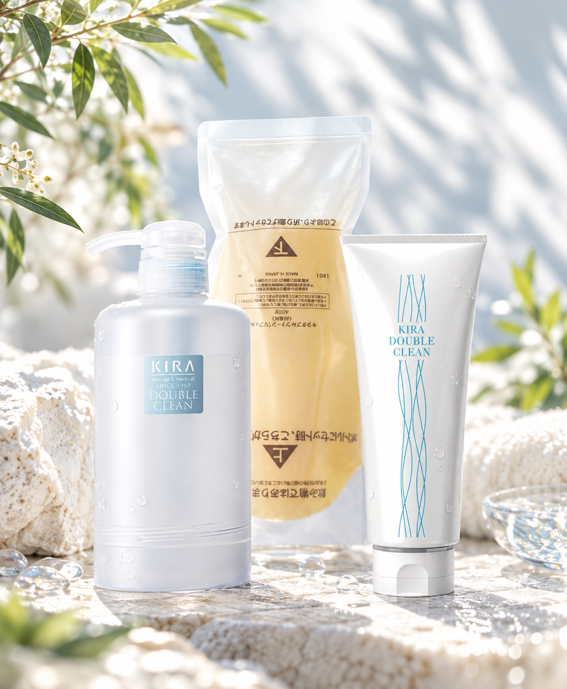
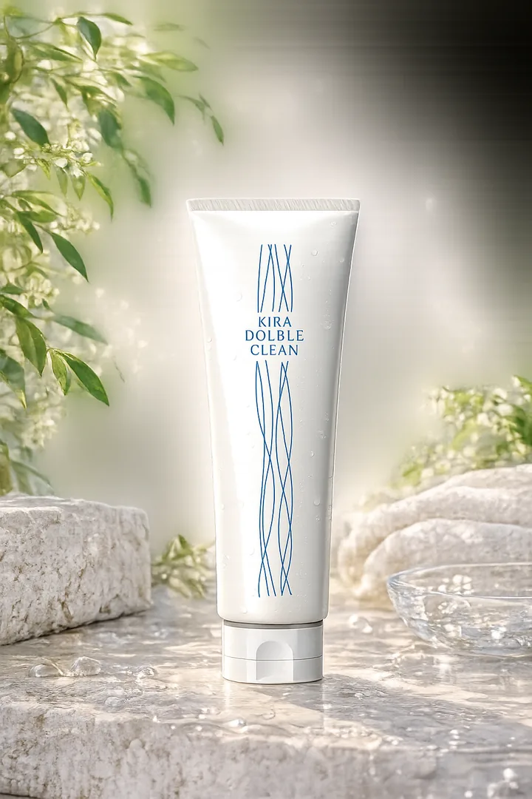
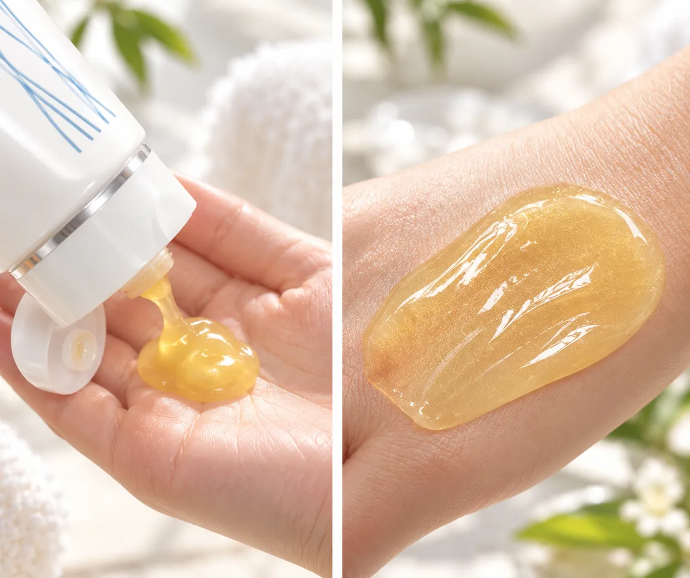
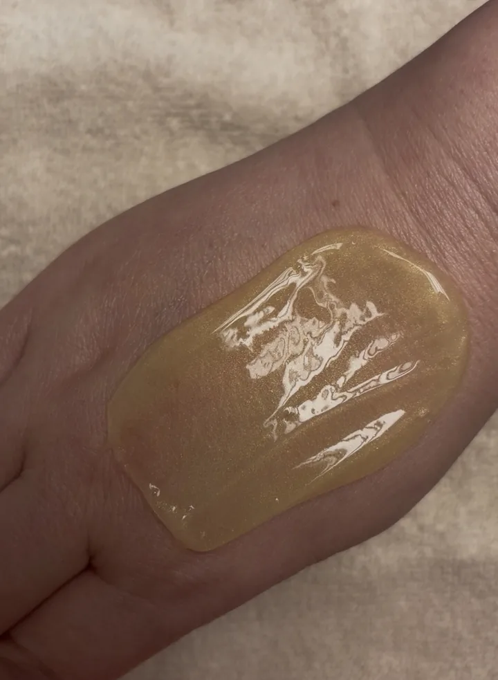
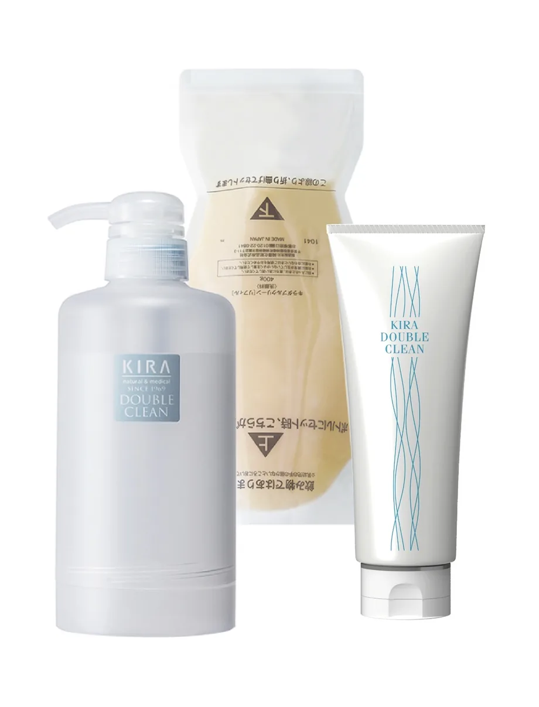

朝には、
朝の洗い方。
泡立てない。やさしくなじませて、汚れを吸着して洗い流す。朝のために選びたい洗顔料、キラ ダブルクリーン。

朝、顔を洗った直後から
乾燥していませんか？
寝ている間にも、皮脂や前夜のスキンケアの油分が肌に残ります。朝も洗顔料で汚れを落として、清潔にしておきたい。
でも、洗うたびにつっぱるのは気になる。
その朝の洗顔に、ダブルクリーンを。
泡をつくらず、
洗う。
肌に必要なうるおいを保ちながら、汚れを洗い流します。
もっちりしたジェルで、
汚れを吸着。
ダブルクリーンは、泡立てない洗顔料。顔全体に軽くなじませ、水またはぬるま湯で洗い流します。洗顔後のつっぱり感が気になる方にも選びやすい洗い上がりです。
中性の処方で、必要な脂分を残しながら皮膚を清浄にします。

スクワラン、グルコオリゴ糖（α-グルカンオリゴサッカリド）、クオタニウム-73を配合。無香料・無着色・アルコール不使用・パラベン不使用・無鉱物油です。
泡ではなく、
この質感。
手のひらに出して広げると、もっちりとしたジェル状。泡立てる手間なく、顔へ軽くなじませられます。

こすりすぎず、軽くなじませて。
洗い上がりには、しっとりした感触を。

こちらは実物を撮影したテクスチャー。黄みを帯びたジェルの見た目も確認できます。
朝の洗顔は、
3つの動作で。
乾いた手に出す
さくらんぼ1粒分。専用ボトルなら軽く2プッシュを目安に、手に広げます。
顔全体に軽くなじませる
泡立てず、あご先から上へ顔全体になじませます。
水かぬるま湯で流す
7〜8回を目安に洗い流します。しっとりした感触が残っても、すすぎすぎないようにします。
使用前には商品容器の使用方法・注意事項もお読みください。
洗顔料も、
朝と夜で使い分ける。
まずは160gから。
続けるならリフィルも。
使い始めやすいチューブと、専用ボトルで使う400gのリフィルをご用意しています。

400gリフィルを初めてお使いになる場合は、専用ボトルも合わせてご用意ください。
400gリフィルのセット方法を見る
専用ボトルの受け皿を外し、リフィルをセットします。詳しい手順は以下のメーカー資料をご覧ください。

ご購入前の、よくある疑問。
- 泡が出なくても、汚れは落ちますか？
- ダブルクリーンは泡立たない洗顔料です。もっちりした使用感で汚れを吸着し、洗い流します。
- 朝は水だけで洗ってもいいですか？
- 前夜のスキンケアの油分や、寝ている間に分泌された皮脂もあるため、メーカーは洗顔料を使う朝の洗顔を勧めています。
- どのくらいすすぎますか？
- 水またはぬるま湯で7〜8回が目安です。洗い上がりのしっとり感が気になっても、すすぎすぎないようにします。
朝の洗顔を、
今日から見直してみませんか。
キラ ダブルクリーンは、群馬県桐生市「サロンドキラたかせい」でご注文・ご相談いただけます。容量選びもお気軽にお尋ねください。
サロンドキラたかせい
お電話：0277-40-2611